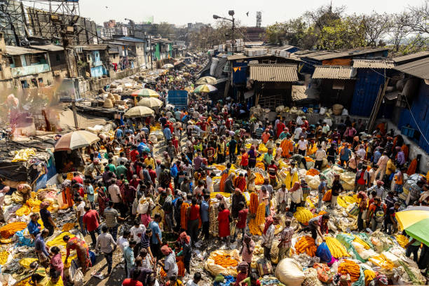

FCE 2026 - Test 3
Reading and Use of English (75 minutes)
Listening (about 40 minutes)
Each recording is played twice. Use headphones and read the questions before you listen.
Writing (80 minutes)
Part 1 - Essay (compulsory)
In your English class you have been discussing how teenagers spend their free time. Your teacher has asked you to write an essay for homework.
Write an essay using all the notes and giving reasons for your point of view.
Notes:
Write about:
1. physical and mental health
2. developing social skills
3. ___________ (your own idea)
Write your essay in 140 - 190 words.
Part 2 - Choose ONE task
Write an answer to one of the questions (a - c) in this part. Write your answer in 140 - 190 words in an appropriate style.
(a) Article: You see this announcement in an English-language magazine: A Great Place to Eat! We are looking for articles about fantastic local restaurants. Write an article describing your favourite place to eat, what the atmosphere is like, and why you would recommend it to visitors.
(b) Email: Your English-speaking friend Sam is planning to start learning your native language and has asked for advice. Write an email to Sam suggesting the best methods to study, how to practice speaking, and what common mistakes to avoid.
(c) Review: You recently watched a new television series that everyone is talking about. Write a review of the series for an entertainment website. Describe the main plot, explain what makes the characters interesting, and say whether the series lives up to the hype.
Sending opens your email app with your text. Very long texts are copied to the clipboard so you can paste them.
Speaking (14 minutes)
Practise with a partner or teacher. The real test lasts about 14 minutes.
Part 1 - Interview (2 minutes)
- What kind of music do you usually listen to, and when?
- Tell me about a typical day in your life.
- Do you prefer travelling to the mountains or the beach? Why?
- What is something new you would like to learn in the future?
Part 2 - Long turn (1 minute each)
Candidate A: Compare the pictures and say how the people might be feeling in these different environments.
Candidate B: Compare the pictures and say what the advantages might be of working or learning in these different ways.
Candidate A's pictures: Different Environments
Compare the pictures and say how the people might be feeling in these different environments.
77.jpg)
Candidate B's pictures: Working and Learning
Compare the pictures and say what the advantages might be of working or learning in these different ways.


Part 3 - Collaborative task (3 minutes)
What are the most important things to consider when planning a holiday? Discuss the ideas below, then decide which TWO are the most essential for a memorable trip.
- the total budget available
- finding comfortable accommodation
- choosing a location with good weather
- planning a variety of activities
- deciding who to travel with
Part 4 - Discussion (4 minutes)
- Why do you think some people prefer to return to the same holiday destination every year?
- Do you think it is better to travel extensively when you are young or wait until you are older and more financially secure?
- Some people say that tourists often fail to respect the local culture of the places they visit. Do you agree?